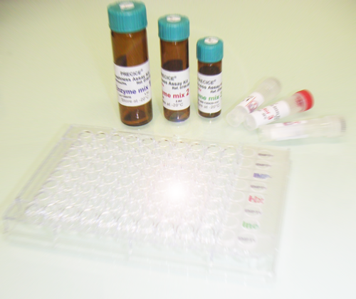

Texture and Water Holding Capacity of fish muscle are of major importance for commercial value and consumer acceptance of raw and smoked salmon. Fish welfare during harvesting and slaughter has also received increasing a lot of attention during last decade. All these parameters are closely related to the rate of postmortem ATP hydriolysis in fish muscle and can be quantified with PRECICE® ATP Breakdown Assay Kit.
ATP breakdown in post mortem muscle
As soon as respiration stops, metabolically active muscle continue de hydrolyse ATP, and in early post mortem ATP pool is maintained due to creatine kinase reaction. Once phosphocreatine has been degraded, muscle glycogenolysis is used to to rephosphorylate ADP to ATP with glycogen being metabolized through anaerobic glycolysis. The breakdown of ATP results in ADP, which is utilized by the adenylate kinase reaction for ATP and AMP formation. AMP is deaminated to inosine monophosphate (IMP), which accumulates in postmortem muscle.

Effect of accelerated ATP breakdown on salmon texture
The softening of muscle texture reduces its acceptability by the consumers and is a reason of quality downgrading in the salmon processing industry. Texture of salmon depends on the connective tissue, consisting mainly of collagen, myosin and actin. Accelerated postmortem ATP breakdown leads to pH drop and the release of cathepsin that degrades muscle connective tissue and provokes muscle softening. As the pH drops, the net surface charge on muscle proteins is reduced resulting in loss of their water-holding capacity.
Harvest stress and glycolysis
The harvest stress and exercise encountered before death provoke fast depeletion of glycogen stored in fish muscle. Since glycolysis is required to slow the rate of ATP degradation, in its absence, ATP is degraded too fast. Fast ATP breakdown can be used as an indicator of stress during harvesting.
Measuring the rate of ATP breakdown
The irreversible breakdown of ATP leads to the formation of IMP. Once released , IMP starts to be degraded by autolytic enzymes.
Fast post mortem ATP breakdown is therefore detected as low IMP content. Low IMP indicates harvest stress and muscle softening.
Slow post mortem ATP hydrolysis results in delayed IMP release and is detected as high IMP content. High IMP indicates no stress and firm texture of muscle.
|  | PRECICE® ATP Breakdown Assay Kit is first microplate assay for measuring the rate of ATP degradation through estimation of relative content of IMP in fish and meat muscle. This assay developed in convenient microplate format offers the opportunity for rapid caracterisation of ATP degradation rate in wide range of fish species and at various conditions . |
1.England EM, Scheffler TL, Kasten SC, Matarneh SK, Gerrard DE. (2013) Exploring the unknowns involved in the transformation of muscle to meat. Meat Sci. 2013 Dec;95(4):837-43
2. Thomas Larsson, Turid Mørkøre, Kari Kolstad, Tone-Kari Østbye, Sergey Afanasyev, and Aleksei Krasnov Gene Expression Profiling of Soft and Firm Atlantic Salmon Fillet PLoS One. 2012; 7(6): e39219